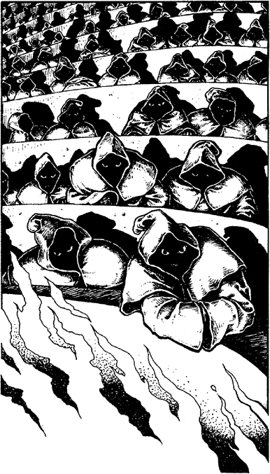

165
You awake to such an astounding sight that you feel sure you must be dreaming. Before you lies a titanic, circular hall of glittering marble, rising tier on tier like a gigantic amphitheatre. A vast pit fills the centre, from which arises a pinnacle of black iron, which is licked by sheets of flame that roar up from the depths below. Scores of seated creatures crowd the tiers, every one of them staring at you, their eyes like pinpoints of fire gleaming coldly from the shadows of their hooded robes. You hear the rustle of their mocking laughter, and your skin prickles with eerie premonition. A great gong booms in the distance, and a doleful chant arises from the crowded tiers. An urge to run from this evil place grips you like a fever, but your wrists are manacled securely to a bronze ring fixed to the wall above your head.

‘Let the trial commence!’ commands a mighty voice, filling the hall with clamouring echoes. As one, the robed spectators rise from their seats as a shaft of light pours down upon the pinnacle, illuminating the outline of a man, white-haired and gaunt, seated on a massive throne of solid, gleaming gold. Suspended in the air above his head are two crystals: one as clear as a polished diamond; the other as black as the grave. A crackling arc of energy travels between the two, and its flickering blue light sheds a ghostly shadow on the face of the seated lord.
‘Intruder,’ he says, his voice soft yet chilling, ‘you have come to Kazan-Oud with murder in your heart. Have not the cowards of Elzian promised to reward you for my destruction?’
A drone of dissent surges from the crowded tiers, drowning any answer that you offer in your defence. The lord rises slowly from the throne and turns to his baying minions, his hands outstretched as if to receive the adulation. As their ghastly drone grows louder, your eye is drawn to the clear crystal that hovers above the throne. A golden light now glows at its core. In a flash of understanding you recognize the object of your quest: here is the Lorestone of Herdos.
‘Your verdict, my children?’ cries the wild-eyed man, his voice now harsh and angry.
‘Guilty, Lord Zahda,’ the crowd howls in reply.
‘The sentence?’ retorts their master.
‘The maze!’ they scream. ‘The maze!’
If you possess the Sommerswerd, turn to 335.
If you do not possess this Special Item, turn to 264.